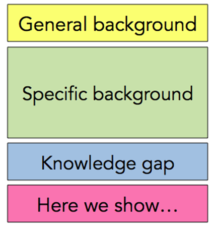

Introduction写作原则
1. 引言写作原则
大体来说，引言要回答三个问题：
(1) 为什么这个研究方向重要？
(2) 当前在这个领域有什么挑战或空白？
(3) 你的研究具体要解决什么问题？

2Introduction框架详解
2.1 第一个子部分：大致介绍研究领域
笔者可以将第一个子部分总结为4句话：目前很多（少）研究针对这个研究对象；这个研究课题非常重要；这项技术将被广泛应用（很具有应用前景）；这是一个被普遍接受的研究。
在论文的引言部分，首先需要对研究领域进行概述，强调其重要性和应用前景。通常，这部分包括以下要点：
- 研究对象的当前研究现状（研究较多或较少）；
- 该研究课题的重要性；
- 该研究在实际应用中的潜力；
- 该领域的研究已被广泛接受。
Example from the paper:
“The accurate identification of protein-ligand binding affinity (PLA) is crucial as it significantly narrows down the search scope for candidate medications, ultimately serving as a first step in drug discovery and enhancing the efficiency of lead optimization.”
2.2 第二个子部分：描述前人的研究
这个部分相当于一个小的研究现状综述，如果这个研究很新颖（你的读者、审稿人对这个研究领域不是很熟悉），那么你可以简单介绍这个研究的基础知识，包括：基本概念，定义，理论，特殊方法等。在介绍别人的研究成果时，一定要表明自己的态度，用于从研究综述引出作者做研究写论文的原因。
在引言的第二部分，需要回顾前人的研究成果，为论文的研究背景奠定基础。这里可以包括：
- 相关领域的基本概念、定义、理论或特殊方法；
- 介绍之前的研究方法及其特点；
- 通过对比不同方法，分析其优缺点；
- 强调现有研究的局限性。
Example from the paper:
“With the progress in computer-aided drug design, numerous computational approaches, divided into physics-based and machine learning methods, have emerged to precisely estimate PLA prediction. In physics-based methods, molecular docking approaches screen ligands and receptors by finding the lowest energy conformation for their binding in the active region using scoring functions. However, these scoring functions often lack accuracy.”
2.3 第三个子部分：引出自己的研究内容
笔者可以将第三个子部分总结为2句话：首先总结第二个子部分研究成果存在的问题；然后提出一些对以前研究的延伸性思考或补充。
这一部分用于引出作者的研究内容，通常包括：
- 现有研究存在的问题或不足；
- 需要改进或补充的地方；
- 强调当前研究的意义。
Example from the paper:
“However, despite the unique advantages of interaction-based and interaction-free methods, there remains a need for an in-silico approach that effectively models molecular sequence characteristics alongside mutual effects to further improve PLA prediction.”
2.4 第四个子部分：介绍自己的课题
首先，引出本研究的创新点；然后，列举解决问题的方法；最后，简单介绍论文的研究结果。
在引言的最后部分，作者需要清晰地阐述自己的研究贡献，通常包括：
- 研究的创新点；
- 采用的方法；
- 研究的主要结论。
Example from the paper:
“To address these issues and bridge the gap between interaction-based and interaction-free methods, we propose a dual-module framework, DualBind, for predicting protein-ligand binding affinity in this study. Specifically, DualBind consists of two primary modules: interaction-free and interaction-based modules. By integrating sequence-level and graph-level representations, DualBind provides a more holistic view of the molecules’ properties, enhancing the accuracy of PLA prediction.”
举个例子: 如果你的研究是关于药物靶标相互作用的预测，那么开篇可以谈谈全球药物研发的高成本和对人类健康的重要性（大图景）。接着可以缩小到在药物靶标相互作用预测方面，现有技术的局限性，例如预测精度不足、对新型靶标的泛化能力差等问题（空白与挑战）。最后，再引入你的研究如何针对这些不足展开，比如你将开发一种基于深度学习和多源数据融合的新型预测模型，以提高预测精度并揭示药物与靶标之间的潜在作用机制（具体问题）。
3 Introduction句型模板
3.1 背景介绍
Recent studies have highlighted the importance of ___ in the field of ___.
The increasing prevalence of ___ has raised significant concerns regarding ___.
The issue of ___ has become a focal point in ___ research, particularly as it relates to ___.
3.2 当前挑战
Despite advancements in ___, challenges such as ___ persist.
Current approaches to ___ face limitations, particularly in terms of ___.
Existing approaches to ___ are often limited by factors such as ___, which restricts their effectiveness.
3.3 研究空白
However, there remains a critical gap in understanding ___, particularly concerning ___.
Limited research has been conducted on ___, which hinders our ability to ___.
Research in ___ is still limited, with few studies addressing the issue of ___.
3.4 研究目标
This study aims to explore __ with the objective of ___.
The primary goal of this research is to investigate ___ in order to ___.
By analyzing ___, this study seeks to provide insights into ___ that can address ___.
3.5 研究意义
The findings of this research could have important implications for ___ and contribute to ___.
Understanding ___ may lead to advancements in ___ and enhance ___.
This study is expected to fill a gap in ___ research and to enhance our understanding of ___.
Jinyu Zhou
2023 graduate student
My research interests include Graph Neural Networks and Protiein-ligand interaction.